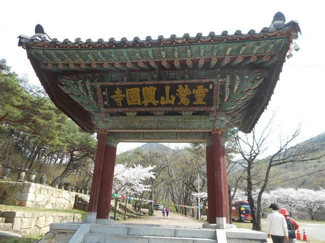
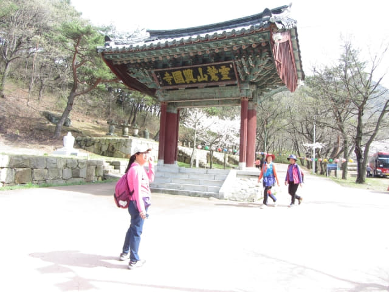
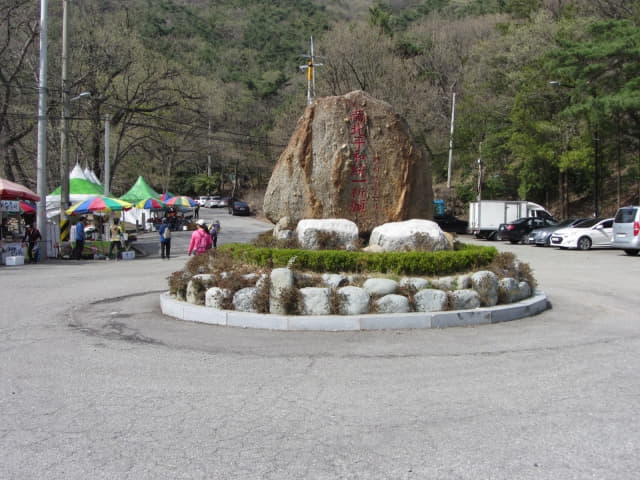
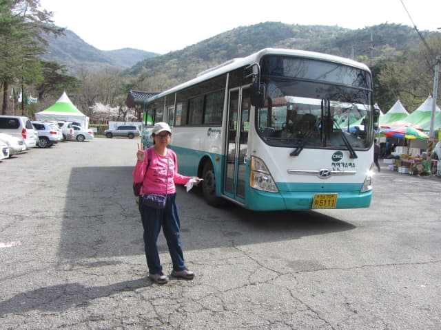
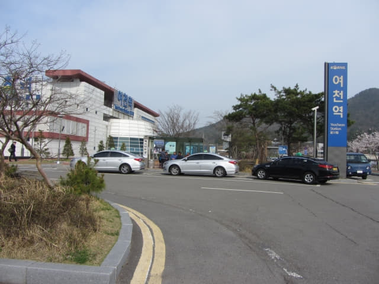
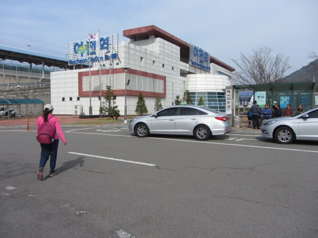
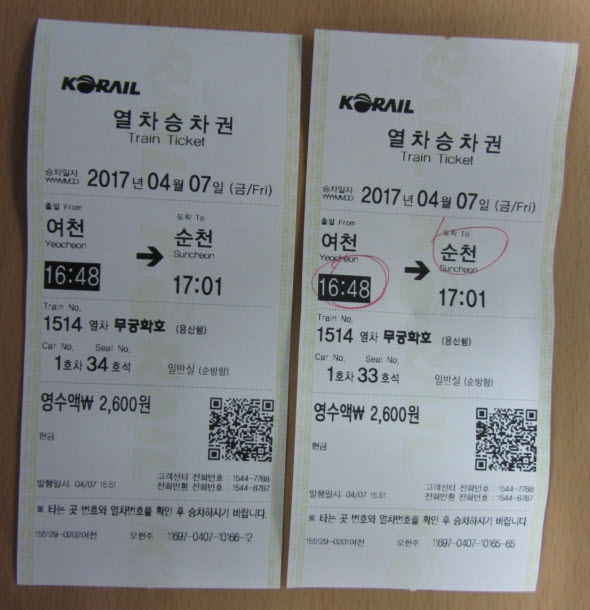

我們從靈鷲山西南面的山麓進入興國寺, 沿寺廟中的步道一直向前走, 順道遊覽了環境優美及清淨的興國寺, 於下午三時穿過靈鷲山興國寺的山門, 而跨越靈鷲山這登山行程也在這裡宣佈完滿結束, 接著是看看這裡是否有巴士往麗川火車站或麗水市區。


興國寺山門外的馬路旁都是一間接連一間的帳篷店舖, 如果是假日, 這裡肯定十分熱鬧。
仍然沒有巴士站的蹤影, 開始有些心急了, 便匆匆繼續往前走。

興國寺巴士站
拐過路中央的一塊巨石, 看到不遠處的路口右邊樹林下有一個上蓋的藍色建築物, 從設計來看, 應該是一個巴士站, 便立即走去看看。哈哈~~ 果然是興國寺 (흥국사) 巴士站! 可以順利回程啦! 我當時高興得竟然沒有和巴士站拍照, 幸好不知她拍什麼或按錯快門, 剛好把巴士站的一角攝入鏡頭內!
找到了巴士站, 但接著的問題是: 因為完全不知道巴士的時刻表, 現在是否有巴士行駛?
這時剛好有一位登山客走來巴士站, 估計他也是乘巴士的, 便立即問他現在是否有巴士行駛? 他看了手機一會, 向我們表示有巴士行駛的! 接著我們指著手錶, 問什麼時間會有巴士? 他好像表示等一會, 又好像表示不知道。算了吧! 最重要是有巴士!
接著他和我們一起坐在巴士站等候, 看見他也在等, 滿心歡喜的以為很快便會有巴士, 也不敢走開。等了幾分鐘, 一輛計程車駛來, 在巴士站附近停下來, 他馬上起身走去, 原來他 Call 了計程車! 巴士站又只餘下我們兩個。
唉! 如果很快有巴士, 他就不會乘計程車啦! 不如四處逛逛。
從興國寺巴士站望靈鷲山興國寺的山門 — 一柱門。
靈鷲山興國寺山門前的帳篷店舖。
靈鷲山興國寺山門前馬路中的巨石, 其實也是一個交通迴旋處。
路口附近的紅橋(홍교)。
不敢走太遠, 在靈鷲山興國寺山門前附近逛了一會, 便返回巴士站繼續等。
乘巴士往麗川火車站
哈哈~~ 一輛 52 號巴士約下午三時二十分駛來興國寺巴士站停下來。這時才正式確定有巴士, 終於可以鬆一口氣了! 接著是時候決定往麗川火車站或麗水了: 往麗水, 可以重遊麗水世博園區, 重拾兩年前一些美好回憶; 如果往麗川火車站, 可以早些回順天。商討了一會, 因今天已經走了很多路, 不想太辛苦, 便決定在麗川火車站下車 , 早些乘火車返回順天。。
興國寺是終點站, 因還未到開車時間, 巴士車長也下了車休息。

車長在下午三時二十八分返回巴士, 啟動引擎。登上了巴士, 往麗川火車站的車票每位是 1,300 韓元。連同我們, 車廂內只有四位乘客, 十分舒適。
巴士於下午三時三十分駛離興國寺, 跨越靈鷲山這登山行程也正式結束了! 回想這好像仙境遊的登山行程, 真是十分回味!
熱心巴士車長在麗川火車站對面給我們下車
沿途交通十分暢通, 巴士速度也很快。巴士行駛了約十五分鐘, 看看街外的景色, 估計差不多到達麗川站了, 就在這時, 巴士在一條斑馬線前停下來, 接著車長叫我們在這裡下車, 並指示馬路對面便是麗川火車站。
下了車, 才知道這裡並不是巴士站, 只是熱心車長方便我們, 讓我們不用走太多路! 真是愈來愈喜歡韓國的巴士車長! 一百個 LIKES 啦!
沿斑馬線走到馬路對面, 已經看到不遠處的麗川火車站。

數十輛的長長計程車隊, 相信是麗川火車站的其中一個特色。
走數十步便來到麗川火車站。

麗川火車站旁的計程車站, 我們今早便是從這裡搭乘計程車往靈鷲山「진달래기념비」登山口的。
麗川火車站乘無窮花號火車返回順天
麗川火車站。
進入麗川火車站一樓售票大堂, 時間約下午三時五十分, 望望火車時刻表, 16:13、16:37 都是車票昂貴的 ITX 和 KTX 班次, 只有 16:48 是無窮花號火車。我們的選擇? 認識我們的朋友都肯定知道答案啦!
麗川 → 順天
16:13 → 16:29 (ITX)
16:37 → 16:52 (KTX)
16:48 → 17:03
18:07 → 18:21 (KTX)
19:10 → 19:26
19:38 → 19:54
20:37 → 20:51 (KTX)
23:29 → 23:45

接著往售票處買了兩張 16:48 班次的無窮花號火車往順天, 每位是 2,600 韓元。

離上車還有差不多一小時, 附近也沒有地方可逛, 便坐在候車室休息。麗川火車站有供應免費的蒸餾水, 值得一讚, 我喝了兩水壺蒸餾水, 補充今天失去的大量水份。
休息了一會, 於下午三時三十五分走往月台。
月台上可清楚看見麗川火車站外長長的計程車隊。

稍後火車便會從遠處的山洞駛來。換言之, 麗水就在那山峰的另一邊。

哈哈~~ 無窮花號火車於下午四時四十五分從遠處的山洞探出頭來, 緩緩駛來2號月台。
登上了火車, 乘客不多的, 十分舒適。
順天火車站
無窮花號火車準時在下午四時四十八分從麗川火車站開出, 正式結束這韓國之旅的麗水行程。
火車於下午五時一分便抵達順天, 行車時間只是十三分鐘。